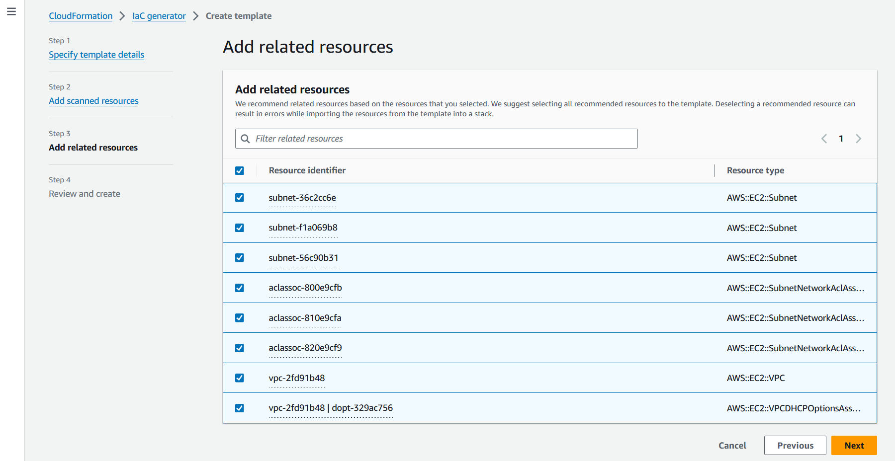

Le traduzioni sono generate tramite traduzione automatica. In caso di conflitto tra il contenuto di una traduzione e la versione originale in Inglese, quest'ultima prevarrà.
Generazione di modelli per risorse esistenti
Con il generatore AWS CloudFormation IaC (infrastructure as code generator), puoi generare un modello utilizzando AWS risorse fornite nel tuo account che non sono già gestite da. CloudFormation Utilizza il modello per importare CloudFormation o replicare risorse in un nuovo account o regione.
Il processo di generazione di IAc prevede diverse fasi:
-
Avvia una scansione del tuo account.
-
Crea un modello, partendo da zero o utilizzando il modello di uno stack esistente come punto di partenza.
-
Aggiungi le risorse scansionate e le risorse correlate al modello utilizzando la procedura guidata per l'aggiunta di risorse.
-
Importa le risorse da gestire CloudFormation come pila o migrale in un'app. AWS CDK
La funzionalità del generatore iAc è disponibile in tutte le regioni commerciali e supporta molti tipi di risorse comuni AWS . Per un elenco completo, consultare Supporto per tipi di risorse.
Argomenti
Considerazioni
È possibile generare YAML modelli JSON per AWS le risorse pubblicate CloudFormation nel registro, per le risorse per le quali si dispone delle autorizzazioni di lettura. I modelli per la funzionalità del generatore IAc modellano le risorse cloud in modo affidabile e rapido senza dover descrivere una risorsa proprietà per proprietà.
La tabella seguente elenca le quote disponibili per la funzionalità di generazione IAc.
| Nome | Valore |
|---|---|
|
Numero massimo di risorse che possono essere elaborate in una scansione dell'account |
100000 |
|
Numero di scansioni al giorno (per account con meno di 10.000 risorse) |
3 |
|
Numero di scansioni al giorno (per account con più di 10.000 risorse) |
1 |
|
Numero simultaneo di modelli generati per account |
5 |
|
Numero simultaneo di risorse modellate per una generazione di modelli. |
5 |
|
Numero totale di risorse che possono essere modellate in un modello |
500 |
Importante
Il generatore IaC supporta solo le risorse supportate dall'API Cloud Control nella tua regione. Per ulteriori informazioni, consulta Determinare se un tipo di risorsa supporta l'API Cloud Control nella Guida per l'utente dell'API Cloud Control
Generazione di un modello (console)
Questa sezione descrive come creare un modello, aggiungere risorse al modello e importare risorse dal modello in uno stack utilizzando la funzionalità del generatore IAc.
Per aprire un nuovo modello utilizzando il generatore IAc
Accedere AWS Management Console e aprire la AWS CloudFormation console all'indirizzo https://console.aws.amazon.com/cloudformation
. -
Dal pannello di navigazione, scegli generatore iAc.

-
Dal pannello Scansioni, scegli Avvia una nuova scansione. Le scansioni rilevano le risorse disponibili nel tuo account e la relazione tra le risorse. Più risorse hai nel tuo account nella regione, più tempo impiega la scansione.

-
Dal pannello Modelli, scegliete Crea modello.

-
Seleziona Inizia da un nuovo modello.
-
Nel pannello Nome modello, inserisci un nome per il modello generato.
-
(Facoltativo) Configura la politica di eliminazione e la politica di aggiornamento e sostituzione.
-
Scegli Avanti per aggiungere risorse scansionate al modello.
-
Per aggiungere risorse scansionate al modello
-
Dall'elenco delle risorse scansionate, sfoglia l'elenco delle risorse scansionate. È possibile filtrare le risorse in base all'identificatore della risorsa, al tipo di risorsa o ai tag. I filtri sono mutualmente inclusivi.

-
Seleziona la risorsa o le risorse che desideri aggiungere.
Ripeti i passaggi 1 e 2 finché non avrai aggiunto tutte le risorse necessarie al modello.

-
Scegli Avanti per uscire dalla pagina Aggiungi risorse scansionate e passare alla pagina Aggiungi risorse correlate.
-
Consulta l'elenco consigliato di risorse correlate. Le risorse correlate, come le istanze e i gruppi di sicurezza di Amazon EC2, sono interdipendenti e in genere appartengono allo stesso carico di lavoro. Seleziona le risorse correlate che desideri includere nel modello generato.
Nota
Ti suggeriamo di aggiungere tutte le risorse correlate a questo modello.
 -
Esamina i dettagli del modello, le risorse scansionate e le risorse correlate. Scegli Modifica per apportare eventuali modifiche.
-
Scegli Crea modello per uscire dalla pagina di revisione, crea la pagina e crea il modello.

Risultati: hai iniziato la creazione del tuo CloudFormation modello e aggiunto le risorse scansionate e correlate.
Per importare risorse da gestire CloudFormation come pila
-
Scegli Importa in pila, quindi scegli Avanti.
-
Inserisci il nome dello stack nel pannello Specificare lo stack della pagina Specificare lo stack. Seleziona Avanti.
-
Esamina e inserisci i parametri per lo stack. Seleziona Avanti.
-
Controlla le opzioni disponibili nella pagina Rivedi le modifiche e scegli Avanti.
-
Controlla i tuoi dati nella pagina Rivedi e importa e scegli Importa risorse.
Risultati: tutte le risorse aggiunte al modello con il generatore IAc vengono importate in uno CloudFormation stack.
Genera un modello ()AWS CLI
Questa sezione descrive come cercare risorse, creare un modello, aggiungere risorse al modello e aggiornarlo ed eliminare un modello utilizzando AWS CLI.
Per cercare risorse nel tuo account
-
Per cercare risorse nel tuo account nella regione selezionata, usa l'start-resource-scanoperazione.
$aws cloudformation start-resource-scanIl comando restituisce quanto segue:
{ "ResourceScanId": \ "arn:aws:cloudformation:us-east-1:123456789012:resourceScan/0a699f15-489c-43ca-a3ef-3e6ecfa5da60" }
Per descrivere la scansione delle risorse dell'account
-
Per descrivere la scansione delle risorse nel tuo account, usa l'describe-resource-scanoperazione.
$aws cloudformation describe-resource-scan \ --resource-scan-id \ "arn:aws:cloudformation:us-east-1:123456789012:resourceScan/0a699f15-489c-43ca-a3ef-3e6ecfa5da60"Il comando restituisce quanto segue:
{ "ResourceScanId" : \ "arn:aws:cloudformation:us-east-1:123456789012:resourceScan/0a699f15-489c-43ca-a3ef-3e6ecfa5da60", "Status": "complete", "StartTime": "2023-08-21T03:10:38.485000+00:00", "EndTime": "2023-08-21T03:20:28.485000+00:00", "PercentageCompleted": 100.0, "ResourceTypes": [ "AWS::EKS::Cluster", "AWS::S3::Bucket" ], }
Per elencare tutte le risorse della scansione
-
Per elencare le risorse trovate nella scansione, utilizzare l'list-resource-scan-resourcesoperazione. La risposta include una colonna che indica se CloudFormation gestisce già la risorsa.
$aws cloudformation list-resource-scan-resources \ --resource-scan-id \ "arn:aws:cloudformation:us-east-1:123456789012:resourceScan/0a699f15-489c-43ca-a3ef-3e6ecfa5da60" \ --resource-identifier exampleResourceIl comando restituisce quanto segue:
{ "Resources": [ { "ResourceType": "AWS::EKS::Cluster", "ResourceIdentifier": { "ClusterName": "exampleResourceCluster" } }, "ManagedByStack": false { "ResourceType": "AWS::S3::Bucket", "ResourceIdentifier": { "BucketName": "exampleResourceBucket" }, "ManagedByStack": false } ] }In questo esempio, si supponga che l'output di
list-resource-scan-resourcesvenga salvato in un file JSON denominatoresources.json.
Per elencare tutte le risorse relative alle risorse scansionate
-
Per elencare le risorse correlate alle risorse scansionate, crea batch composti da un massimo di 100 risorse scansionate e utilizza l'operazione list-resource-scan-related-resources per ogni batch. Tieni presente che l'output può contenere risorse duplicate nell'elenco.
La risposta include una colonna che indica se CloudFormation gestisce già la risorsa. Si consiglia di aggiungere tutte le risorse correlate al modello.
$aws cloudformation list-resource-scan-related-resources \ --resource-scan-id \ "arn:aws:cloudformation:us-east-1:123456789012:resourceScan/0a699f15-489c-43ca-a3ef-3e6ecfa5da60" \ --resources file://resources.jsonIl comando restituisce quanto segue:
{ "RelatedResources": [ { "ResourceType": "AWS::EKS::Nodegroup", "ResourceIdentifier": { "NodegroupName": "exampleNodegroup" }, "ManagedByStack": false }, { "ResourceType": "AWS::IAM::Role", "ResourceIdentifier": { "RoleId": "arn:aws::iam::123456789012:role/S3Access" }, "ManagedByStack": false } ] }Nota
L'elenco di risorse di input non può superare la lunghezza di 100. Per elencare le risorse correlate per più di 100 risorse, esegui l'operazione in batch di 100 e consolida i risultati.
Supponiamo che l'output di
list-resource-scan-related-resourcesvenga aggiunto anche al file JSON denominato.resources.json
Per generare un modello
-
Per generare un nuovo modello senza risorse, utilizzate l'create-generated-templateoperazione e specificate il nome del modello.
$aws cloudformation create-generated-template \ --generated-template-nameTemplateNameIl
create-generated-templatecomando restituisce quanto segue.{ "Arn": \ "arn:aws:cloudformation:us-east-1:123456789012:generatedtemplate/7fc8512c-d8cb-4e02-b266-d39c48344e48", "Name": "TemplateName" }
Per aggiornare il modello generato con le risorse
-
Per aggiornare il modello appena creato, puoi specificare un elenco di risorse che desideri aggiungere. In questo esempio, utilizziamo il file
resources.json. Quello che segue è il file di testo JSON perresources.json:[ { "ResourceType": "AWS::EKS::Cluster", "LogicalResourceId":"Cluster", "ResourceIdentifier": { "ClusterName": "exampleResourceCluster" } }, { "ResourceType": "AWS::S3::Bucket", "LogicalResourceId":"Bucket", "ResourceIdentifier": { "BucketName": "exampleResourceBucket" } }, { "ResourceType": "AWS::EKS::Nodegroup", "LogicalResourceId":"Nodegroup", "ResourceIdentifier": { "NodegroupName": "exampleNodegroup" } }, { "ResourceType": "AWS::IAM::Role", "LogicalResourceId":"Role", "ResourceIdentifier": { "RoleId": "arn:aws::iam::123456789012:role/S3Access" } } ]Per aggiornare il modello, utilizzate l'update-generated-templateoperazione, specificate il nome dello stack e specificate il file di testo per aggiungere risorse al modello. L'
--cloud-formation-template-configurationopzione non è inclusa, quindi leDeletionPolicypoliticheUpdateReplacePolicye sono impostate su diRetaindefault.$aws cloudformation update-generated-template \ --generated-template-nameTemplateName\ --add-resources file://resources.jsonIl
update-generated-templatecomando restituisce quanto segue.{ "Arn": "arn:aws:cloudformation:us-east-1:123456789012:template/equipment-sorter", "Name": "TemplateName" }
Per eliminare il modello specificato in base al nome dello stack
-
Per eliminare il modello generato, utilizzare l'delete-generated-templateoperazione e specificare il nome di generazione del modello o l'ARN di generazione del modello.
$aws cloudformation delete-generated-template \ --generated-template-nameTemplateName
Genera e gestisci modelli con AWS CDK
AWS Cloud Development Kit (AWS CDK) è un framework di sviluppo software open source che puoi utilizzare per sviluppare, gestire e distribuire AWS CloudFormation risorse utilizzando i linguaggi di programmazione più diffusi.
La AWS CDK CLI fornisce un'integrazione con il generatore IAc. Usa il cdk migrate comando AWS CDK CLI per generare un AWS CloudFormation modello e creare una nuova app CDK che contenga le tue risorse. Quindi, puoi utilizzare il AWS CDK per gestire le tue risorse e distribuirle su. AWS CloudFormation
Per ulteriori informazioni, consulta Migrate to AWS CDK nella AWS Cloud Development Kit (AWS CDK) Developer Guide.